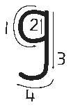
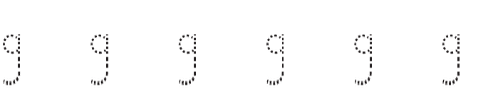

Lesson 6: Letter g
Lesson 6
Letter g
Trace the letter g or write dot one, dot two, dot four, and dot five.


Copy or write letter g
Lesson 6
Trace the letter g or write dot one, dot two, dot four, and dot five.


Copy or write letter g